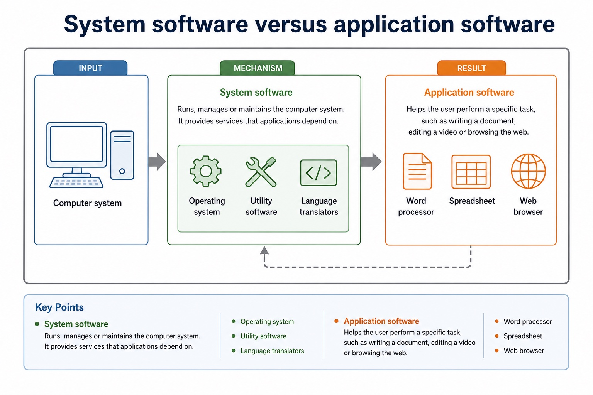

Lesson 052 | 45 minutes | Paper 1 Section 5 | System software
System software keeps the computer useful before the apps arrive.
System software manages the computer, supports application software
and helps programs run. This lesson separates operating systems,
utility software and language translators so students do not put
every program into the same digital drawer.
Classifyoperating systems, utility software and language translators
Explainhow system software supports hardware, applications and users
Comparecompiler, interpreter and assembler at overview level
The OS is not the app. The translator is not the source code. The utility is not magic cleaning spray.
Why this matters
Section 5 answers often fail because students name software but do not state the service it provides.
Common trap
Do not call a word processor an operating system. Application software performs user tasks; system software supports the system.
Warm-up hook
A user writes `PRINT("Hello")`. The CPU wants machine code. Who translates?
Click the best answer. The processor is powerful, but it is not fluent in every high-level language.
Choose one. Source code must be translated into code the processor can execute.
Knowledge point 1
System software supports the running and maintenance of the computer
System softwareSoftware that manages hardware, supports applications and helps maintain the computer system.Operating systemSystem software that manages resources and provides an interface and services for users and applications.Utility softwareSystem software that performs maintenance, protection or optimisation tasks.TranslatorSystem software that converts source code into code that can be executed or further processed.
Chinese support: system software = 系统软件；operating system = 操作系统；utility software = 实用程序；translator = 语言翻译程序。
System software supports the running and maintenance of the computer
System software supports the running and maintenance of the computer: source-grounded visual explanation.
Lesson fact: System software
Lesson fact: Software that manages hardware, supports applications and helps maintain the computer system.
Lesson fact: Operating system
Lesson fact: System software that manages resources and provides an interface and services for users and applications.
Lesson fact: Utility software
Lesson fact: System software that performs maintenance, protection or optimisation tasks.
Lesson fact: Translator
Lesson fact: System software that converts source code into code that can be executed or further processed.
Knowledge point 2
System software versus application software
System software
Runs, manages or maintains the computer system. It provides services that applications depend on.
Operating system
Utility software
Language translators
Application software
Helps the user perform a specific task, such as writing a document, editing a video or browsing the web.
Word processor
Spreadsheet
Web browser
System software versus application software

System software versus application software: source-grounded visual explanation.
Lesson fact: System software
Lesson fact: Runs, manages or maintains the computer system. It provides services that applications depend on.
Lesson fact: Operating system
Lesson fact: Utility software
Lesson fact: Language translators
Lesson fact: Application software
Lesson fact: Helps the user perform a specific task, such as writing a document, editing a video or browsing the web.
Lesson fact: Word processor
Lesson fact: Spreadsheet
Lesson fact: Web browser
Knowledge point 3
Operating system: the main coordinator
User interfaceProvides a way for users to interact with the computer, such as GUI or command line.Resource managementAllocates and controls hardware resources such as processor time, memory and devices.File servicesProvides file organisation, storage access and permission support.Application servicesProvides services and APIs that application software can use.
Boundary
Detailed process, memory, file and device management are developed in Lesson 053. Here the OS is introduced as the main system coordinator.
Operating system: the main coordinator
Operating system: the main coordinator: source-grounded visual explanation.
Lesson fact: User interface Provides a way for users to interact with the computer, such as GUI or command line.
Lesson fact: Resource management Allocates and controls hardware resources such as processor time, memory and devices.
Lesson fact: Application services Provides services and APIs that application software can use.
Lesson fact: Boundary
Lesson fact: Detailed process, memory, file and device management are developed in Lesson 053. Here the OS is introduced as the main system coordinator.
Knowledge point 4
Utility software: maintenance and protection tools
Utility
Purpose
Exam-safe wording
Antivirus
Detects, quarantines or removes malware.
Protects the system from malicious software.
Backup
Creates copies of files/data.
Allows recovery after data loss, corruption or hardware failure.
Compression
Reduces file size.
Saves storage space or reduces transmission time.
Disk/file tools
Manage storage, clean temporary files or check disks.
Maintains storage organisation and may improve usability.
Utility software: maintenance and protection tools
Utility software: maintenance and protection tools: source-grounded visual explanation.
Lesson fact: Exam-safe wording
Lesson fact: Antivirus
Lesson fact: Detects, quarantines or removes malware.
Lesson fact: Protects the system from malicious software.
Lesson fact: Creates copies of files/data.
Lesson fact: Allows recovery after data loss, corruption or hardware failure.
Lesson fact: Compression
Lesson fact: Reduces file size.
Lesson fact: Saves storage space or reduces transmission time.
Lesson fact: Disk/file tools
Lesson fact: Manage storage, clean temporary files or check disks.
Lesson fact: Maintains storage organisation and may improve usability.
Knowledge point 5
Language translators: source code to executable behaviour
CompilerTranslates the whole source program before execution, often producing object or executable code.InterpreterTranslates and executes source code statement by statement, often useful during development and debugging.AssemblerTranslates assembly language mnemonics into machine code for a specific processor.
Common trap
An interpreter is not a "bad compiler". It is a different translation approach with different trade-offs.
Language translators: source code to executable behaviour
Language translators: source code to executable behaviour: source-grounded visual explanation.
Lesson fact: Compiler
Lesson fact: Translates the whole source program before execution, often producing object or executable code.
Lesson fact: Interpreter
Lesson fact: Translates and executes source code statement by statement, often useful during development and debugging.
Lesson fact: Assembler
Lesson fact: Translates assembly language mnemonics into machine code for a specific processor.
Lesson fact: Common trap
Lesson fact: An interpreter is not a "bad compiler". It is a different translation approach with different trade-offs.
Knowledge point 6
Translation pathway
High-level source codeHuman-readable instructions such as Python, Java or pseudocode-like code.
TranslatorCompiler/interpreter converts or executes the source language.
Object / executable / machine codeLow-level code that the processor can execute directly or as part of a build process.
Error feedbackSyntax and translation errors must be reported so the programmer can correct them.